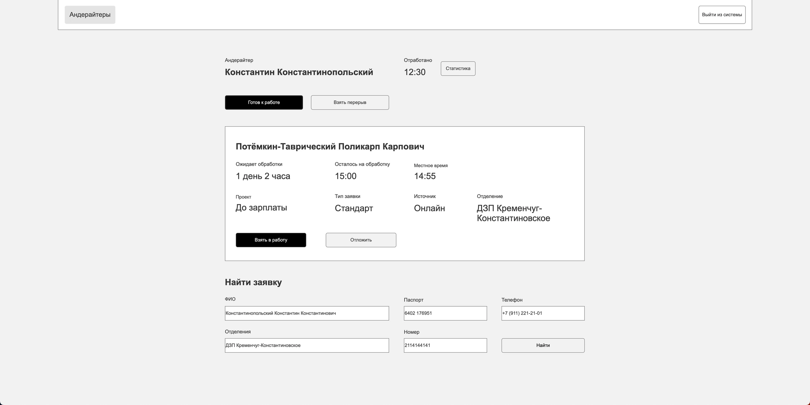
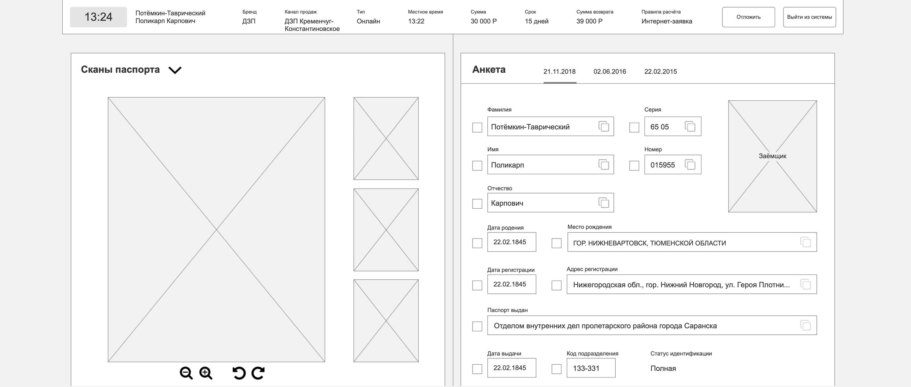
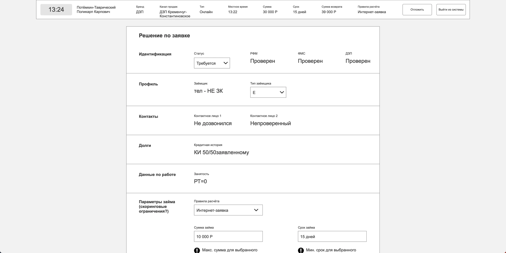
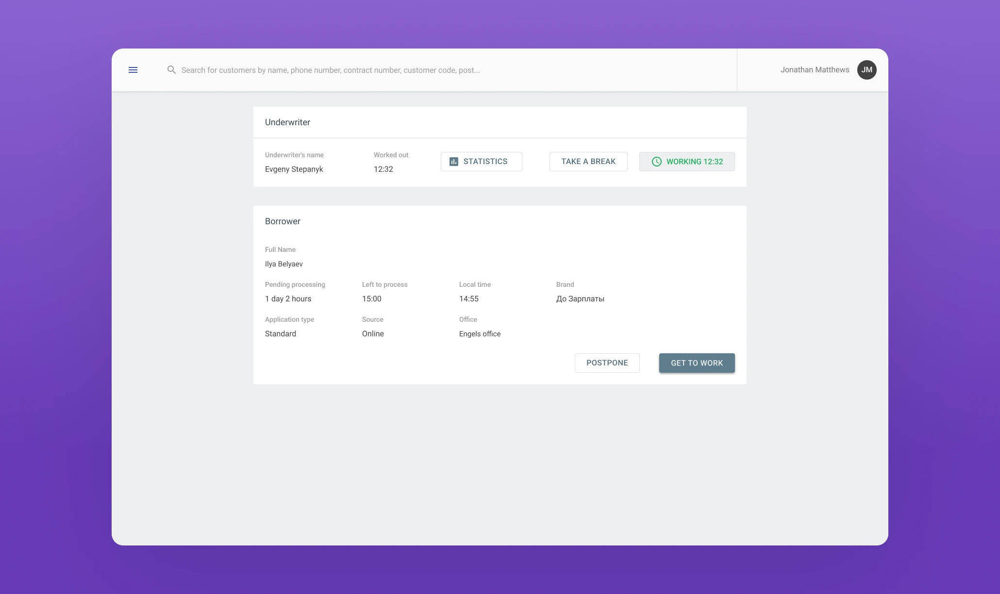
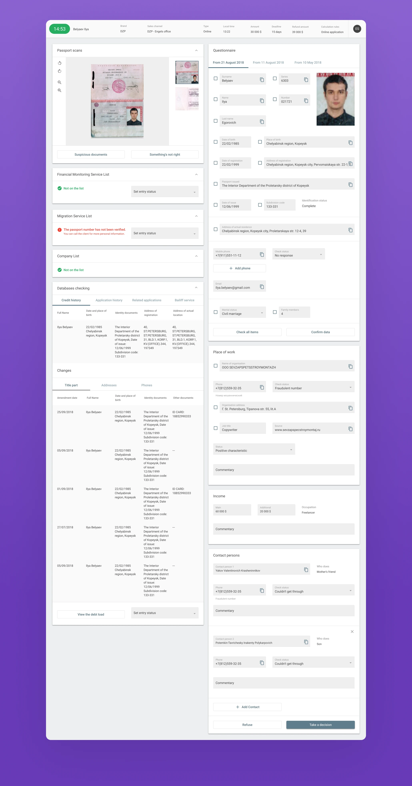
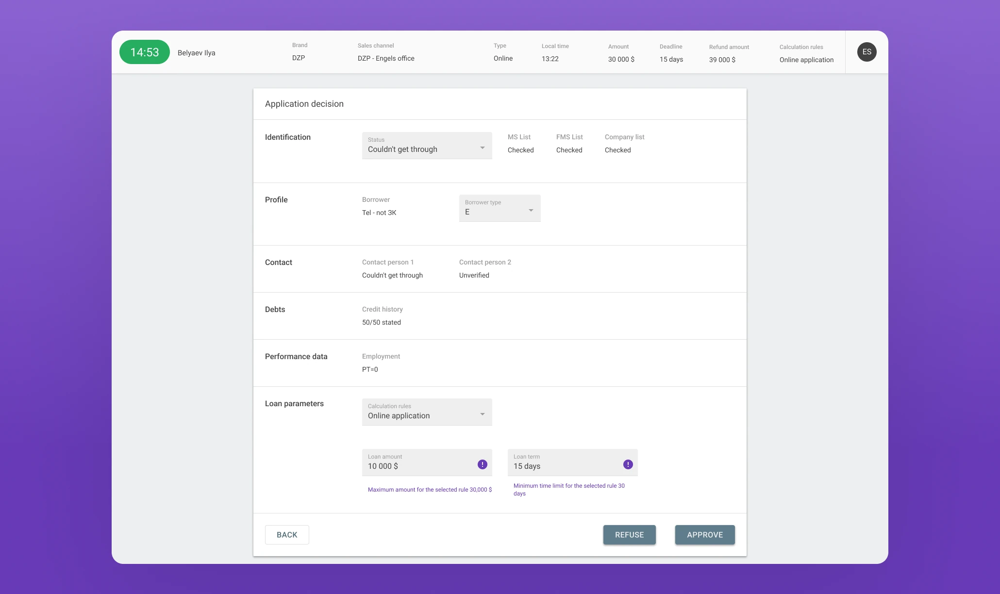

Financial services · B2B · Web application
CRM Underwriting System
Consolidating corporate and government data into one focused workspace for faster, more consistent loan decisions.
Overview
This CRM underwriting system helps specialists analyze borrowers across corporate and government databases. The underwriter can compare the required information in one application and decide whether to grant or refuse a loan.
My work included staff observation, interactive prototyping, user testing, scenario design, interface design, and creation of the product’s visual language.
Problem
The company’s operational team was growing rapidly. Underwriters spent significant time switching between databases and applications, which interrupted concentration and slowed customer verification.
The system needed to automate underwriting, synchronize multiple data sources, and reduce disputed loan decisions.
Solution
Observation showed that underwriting is fundamentally a comparison task. Because employees worked on a single monitor, I designed a split-screen interface: source databases and borrower history on one side, the current application form on the other.
Checkboxes recorded review progress. At the final step, the system summarized information and proposed a decision. A color-free Axure prototype kept staff testing focused on the process before visual design began.






Outcome
The first version collected the necessary databases, provided a practical comparison interface, and introduced a secure decision mechanism. Material Design 2.0 gave the product a familiar foundation.
The project strengthened my analytics-led design practice and took my interactive prototyping and collaboration with business analysts to a new level.